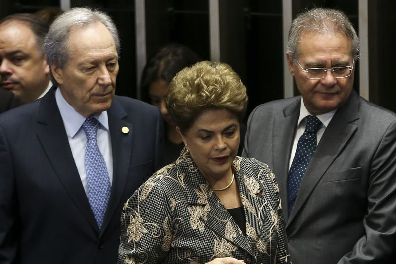

Se o governo anterior teve sua cota considerável de polêmicas e desventuras, a administração de Michel Temer (PMDB) em seu período como interino também foi amplamente controversa.
Pesquisa inédita do Volt Data Lab classificou cerca de 700 reportagens, notas e publicações da Agência Brasil de 12 de maio a 22 de agosto nas quais o presidente interino Michel Temer foi citado, e mostra que o período foi marcados por polêmicas e protestos, mas também pelo destravamento de novas políticas na pauta nacional.
Desde que assumiu o cargo interinamente, em 12 de maio, o governo Temer tem sido motivo de controvérsias, partindo da formação inicial de seu gabinete majoritariamente masculino e branco até a demissão prematura de ministros e reajuste de servidores públicos em tempos de vacas magras. Mas ainda não estava quantificado como essas controvérsias se desenrolaram.
Os dados levantados nesta pesquisa quantificam, de uma forma geral, a situação delicada do governo após a definição do afastamento de Dilma, em 31 de agosto.
O Volt atualmente trabalha na elaboração de um comparativo com de 100 dias do governo Dilma Rousseff, mas tal trabalho demanda tempo e recursos.
Embora seja difícil quantificar exatamente - a partir da contabilização apenas da cobertura noticiosa - todas as ocorrências do que aconteceu com durante os 100 primeiros dias de Temer à frente do governo, essa quantificação fornece uma dimensão bastante contundente.
Das 694 matérias1 analisadas pela reportagem, 89 delas tratavam de polêmicas2, ou cerca de 13% do total.
Se dividirmos isso pelos 100 primeiros dias do presidente no poder, vemos que é quase uma polêmica por dia. Ainda não temos dados comparativos com o governo anterior, mas não é preciso isso para sabermos que é muita coisa.
Vale notar que nem todas as matérias da Agência Brasil falam de casos diferentes, mas análise do Volt concluiu que a reincidência dos mesmos temas é baixa, o que demonstra que cada headline publicado pela agência fornece um número aproximado de ocorrências únicas.
Boa parte da cobertura da Agência Brasil foi publicar notas com declarações de Temer, de ministros ou de outros membros do governo (quase 20% das matérias), assim como noticiar novas políticas apresentadas ou falar das antigas (18%).
Chama a atenção também o desmonte de pessoal implementado por Temer. Obviamente, era esperado que ele reformulasse todos os ministérios e que a base aliada se reformulasse, como faz qualquer novo mandatário. Mas houve cerca de 50 trocas no alto escalão do governo, ou uma a cada dois dias.
Além disso, as repercussões contrárias ao governo Temer são a maioria. Das 269 matérias que mostram repercussões sobre a nova administração federal, 53% delas foram negativas ao governo, enquanto 13% foram positivas e 34%, neutras.
A constante presença de protestos, polêmicas e repercussões nas principais notícias sobre os primeiros três meses de Michel Temer à frente do Planalto, se não é suficiente para clarear os direcionamentos do novo governo, ao menos dá uma ideia da falta de consenso que embala as opiniões a seu respeito.
Representantes de interesses distintos da sociedade, falando ao Volt, apontaram os episódios mais relevantes nos pouco mais de 100 dias em que Michel Temer governou interinamente o Brasil - desde 12 de maio, quando o Senado confirmou a abertura do processo de impeachment contra Dilma Rousseff, até o 31 de agosto, quando a ex-presidente foi de fato afastada.
Para Ricardo Ribeiro, analista de política a LCA Consultores, consultoria de economia e negócios voltada a grandes empresas e investidores, o que se sobressai do governo Temer é uma gestão ‘parlamentarizada’ que, se por um lado, tem feito concessões a alianças, por outro tem mostrado muito mais eficiência em aprovar agendas que, com Dilma no comando, ficaram travadas.
Já para José Moroni, filósofo e historiador que compõe o corpo do Instituto de Estudos Econômicos (Inesc), organização de promoção e defesa dos direitos civis e direitos humanos, o tom predominante de Temer e sua equipe é o de um grande retrocesso na seara de direitos.
“O primeiro grande evento foi a montagem do ministério, que já deu uma pista do que seria e provavelmente será este um governo; um governo muito conectado com o Congresso”, disse Ribeiro, da LCA. “Mais de 50% dos novos ministros são parlamentares, e todos os partidos maiores que apoiaram o impeachment estão representados no ministério numa proporção muito semelhante à suas participações no Congresso”.
PMDB, PSDB, PP, DEM, PV e PSB foram as legendas que ganharam ao menos um indicado lista de ministros da nova gestão, divulgadas na manhã do dia 12 de maio, poucas horas depois do término da votação pela abertura do processo de impeachment no Senado, na madrugada do dia 11 para o dia 12.
Ribeiro destacou algumas mudanças de direcionamento importantes no posicionamento referente a determinadas políticas, com destaque para a política externa, que aponta para um afastamento dos vizinhos latinos e reaproximação e dos tradicionais parceiros Estados Unidos e Europa. Destacou também a pauta de privatizações, que já vem sendo desde junho anunciada e estruturada por Temer e sua equipe econômica.
“Mas a principal diferença é a governabilidade política”, diz o analista. “A agenda de ajustes já tinha sido assumida com Dilma, com a diferença que o PT nunca assumiu essa agenda e isso dificultava o trabalho no Congresso. Agora, o que temos é isso: um governo que negocia, cede em algumas coisas para tentar aprovar outras mais importantes.”
Para Moroni, do Inesc, a composição do ministérios e o rearranjo subsequente nas pastas também está entre as principais notícias que vieram com Temer, mas a mensagem que apreende é outra.
“O rebaixamento de ministérios não é só uma questão de status, mas de haver ou não reconhecimento de determinados sujeitos dentro das políticas públicas”, diz ele. “Mulheres, a população negra, indígena e LGBT são alguns destes grupos. É muito simbólico por exemplo não ter nenhuma mulher no ministério. Não é um acaso. A política também é feita de simbolismos”.
A composição exclusiva de homens brancos em todos os ministérios foi uma das primeiras grandes polêmicas acerca de Temer tão logo ele anunciou o novo gabinete, no dia de sua posse.
Entidades civis e publicações nacionais e internacionais chamaram atenção para o fato. Conforme correu o mês, porém, o presidente interino buscou diversificar sua cúpula com alguns convites a mulheres recusados e outros aceitos - vieram em 17 de maio a procuradora e professora Flavia Piovesan, para a Secretaria de Direitos Humanos do Ministério da Justiça, e, em 1o de junho, Maria Silva Bastos, para o BNDES.
Tão imediata quanto a controvérsia do time masculino, foi a da revisão e rebaixamento de ministérios, também anunciada junto aos novos nomes por Temer no primeiro dia de comando.
A de maior repercussão delas - a extinção do Ministério da Cultura para acoplá-lo ao da Educação - foi revista pouco tempo depois.
Mas Moroni destaca outras: “O Ministério do Desenvolvimento Agrário foi revisto, o que reduz a parte que voltada à família e o social, e o Ministério da Previdência foi fatiado, com a parte de benefícios e desenvolvimento social indo para a Fazenda, modelo que existiu no Brasil até 1923”.
Movimentos como estes, na análise do Inesc, subordinam a gestão de interesses sociais, como a reforma agrária ou as aposentadorias, que antes eram independentes, à política econômica coordenada na Fazenda e ao governo central.
“Do ponto de vista da forças populares, dos movimentos que lutam pelos direitos humanos e a defesa dos direitos sociais, não há nada de positivo. O que vemos é uma grande retrocesso”, conclui Moroni.
Este projeto foi feito pela agência de jornalismo Volt Data Lab.
A reportagem é de Juliana Elias e o levantamento e a edição são de Sérgio Spagnuolo.
A ideia nos foi indicada por um potencial cliente o qual, após ver o resultado parcial da pesquisa, não se interessou em prosseguir e publicar o material.
O Volt, no entanto, empenhado em fazer reportagens e levantamentos de potencial interesse público e que considera ter relevância, não quis abandonar o projeto e decidiu prosseguir para publicação por conta própria.
A pesquisa analisou cerca de 700 reportagens, notas e publicações da Agência Brasil de 12 de maio a 22 de agosto nas quais o presidente interino Michel Temer foi citado.
Foram realizadas buscas 3 no Google com o nome de “Michel Temer”, levando em conta apenas material publicado no site da agência estatal de notícias.
Matérias sem citar Temer diretamente texto das matérias foram desconsideradas, mesmo que envolvesse aliados, ministros ou políticas ligadas a ele. Às vezes o nome do presidente interino pode constar nos metadados da página, mas não necessariamente no conteúdo.
Além disso, outras matérias como que as falam genericamente de governo ou medidas provisórias, por exemplo, sem citar Temer, também foram desconsideradas.
Os critérios de escolha para selecionar a Agência Brasil como fonte foram:
Embora alguns casos não tenham sido reportados pela Agência Brasil, é razoável considerar que a agência estatal faça uma cobertura bastante geral do governo, sendo possível, assim, chegar às conclusões da pesquisa.
O conteúdo levantado foi classificado em cinco categorias principais e nove subcategorias, escolhidas após primeira análise do material, buscando sempre a neutralidade na escolha.
São as categorias:
São as subcategorias:
Todos os dados da pesquisa você pode acessar aqui:
Os gráficos foram feito em D3.js, e o principal foi baseado na sensacional adaptação do chamado “diagrama de cordas” feita por Nadieh Bremer, do Visual Cinnamon.
Notas, reportagens e outras publicações. ↩︎
Entende-se por polêmicas casos que geraram controvérsia ou indignação por partes relevantes da classe política ou da sociedade. ↩︎
A busca exata considerada foi: "Michel Temer" site: agenciabrasil.ebc.com.br ↩︎
Embora a própria agência seja motivo de polêmica envolvendo a indicação do jornalista Ricardo Melo para presidência da EBC, é possível dizer que o tom das matérias é isento. ↩︎
A repetição exaustiva de temas pode ser afetar o levantamentos de casos únicos. Por exemplo, falar todo dia sobre o afastamento de Romero Jucá do Ministério do Planejamento não significa que cada nova matéria trata de casos diferentes, e sim explora o mesmo caso com diferentes ângulos - de toda forma, é o mesmo caso ↩︎